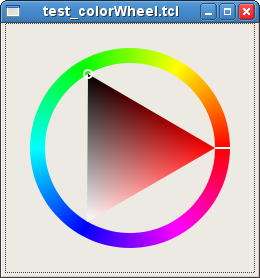

GtkHSV - Una "rueda de colores"
| GtkWidget * | gtk_hsv_new () |
| void | gtk_hsv_set_color () |
| void | gtk_hsv_get_color () |
| void | changed | Run first |
| void | move | Action |
| struct | GtkHSV |
GtkHSV implementa AtkImplementorIface y GtkBuildable
#include <gtk/gtk.h>
GtkHSV is la parte de "rueda" del selector de colores. Permite seleccionar un color determinando sus componentes HSV en una forma intuitiva. Moviendo la selección alrededor de el anillo se cambia el tono, y moviendo el ratón por el triángulo interior se cambia el valor y la saturación.
GtkHSV se abandonó junto con el GtkColorSelection, donde se usaba.
GtkWidget *
gtk_hsv_new (void);
gtk_hsv_new está abandonado y no debería usarse en código nuevo.
El recién creado selector de colores HSV.
void
gtk_hsv_set_color (GtkHSV *hsv,
double h,
double s,
double v);
Establece el color actual en el selector de colores HSV. Los valores deben estar en el rango de [0.0, 1.0].
| hsv | Un selector de colores HSV |
| h | Hue (tono) |
| s | Saturación |
| v | Valor |
void
gtk_hsv_get_color (GtkHSV *hsv,
gdouble *h,
gdouble *s,
gdouble *v);
Obtiene el color actual del selector. Los valores de retorno se encuentran en el rango de [0.0, 1.0].
| hsv | Un selector de colores HSV |
| h | Valor de retorno para el tono |
| s | Valor de retorno para la saturación |
| v | Valor de retorno para el valor de color |
struct GtkHSV;
void
user_function (GtkHSV *hsv,
gpointer user_data)
Flags: Run first
void
user_function (GtkHSV *hsv,
GtkDirectionType arg1,
gpointer user_data)
Flags: Action